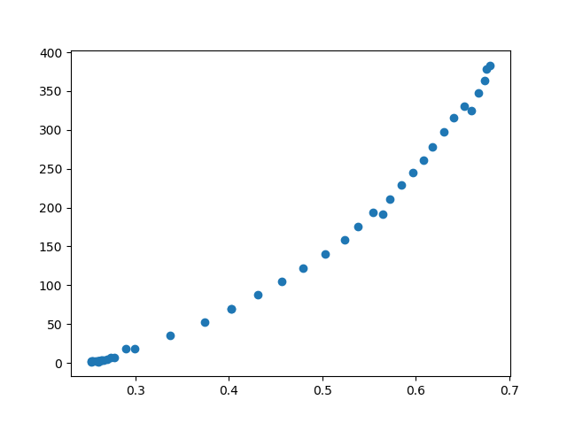

Profile Class¶
-
class
pymedphys._labs.paulking.profile.Profile(x=array([], dtype=float64), y=array([], dtype=float64), meta={})[source]¶ One-dimensional distribution of intensity vs position.
-
x¶ position, +/- in cm
Type: np.array
-
y¶ intensity in unspecified units
Type: np.array
-
meta¶ metadata
Type: dict, optional
Examples
profiler = Profile().from_profiler("C:\profiler.prs")film = Profile().from_narrow_png("C:\image.png")
profiler.cross_calibrate(film).plot(marker='o')Notes
Requires Python PIL.
-
__iadd__(other)¶ shift right
-
__imul__(other)¶ scale y
-
__init__(x=array([], dtype=float64), y=array([], dtype=float64), meta={})[source]¶ create profile
Parameters: - x (np.array, optional) –
- y (np.array, optional) –
- meta (dict, optional) –
Notes
Normally created empty, then filled using a method, which returns a new Profile.
-
__isub__(other)¶ shift left
-
__radd__(other)¶ shift right
-
__rmul__(other)¶ scale y
-
__rsub__(other)¶ shift left
-
__weakref__¶ list of weak references to the object (if defined)
-
align_to(other)[source]¶ shift self to align to other
Calculated using shift that produces greatest peak correlation between the curves. Flips the curve left-to-right, if this creates a better fit.
Parameters: other (Profile) – profile to be be shifted to Returns: Return type: Profile
-
cross_calibrate(reference, measured)[source]¶ density mapping, reference -> measured
Calculated by overlaying intensity curves and observing values at corresponding points. Note that the result is an unsmoothed, collection of points.
Parameters: - reference (string) –
- measured (string) – file names with path
Returns: Return type:
-
from_lists(x, y, meta={})[source]¶ import x and y lists
Parameters: - x (list) – List of float x values
- y (list) – List of float y values
- meta (dict, optional) –
Returns: Return type: Examples
profile = Profile().fron_lists(x_list,data_list)
-
from_narrow_png(file_name, step_size=0.1)[source]¶ import from png file
Source file is a full color PNG, sufficiently narrow that density is uniform along its short dimension. The image density along its long dimension is reflective of a dose distribution.
Parameters: - file_name (str) –
- step-size (float, optional) –
Returns: Return type: Raises: - ValueError – if aspect ratio <= 5, i.e. not narrow
- AssertionError – if step_size <= 12.7 over dpi, i.e. small
-
from_pulse(centre, width, domain, increment, meta={})[source]¶ create pulse of unit height
Parameters: - centre (float) –
- width (float) –
- domain (tuple) – (x_left, x_right)
- increment (float) –
- meta (dict, optional) –
Returns: Return type:
-
from_snc_profiler(file_name, axis)[source]¶ import profile form SNC Profiler file
Parameters: - file_name (string) – file name with path, .prs
- axis (string) – ‘tvs’ or ‘rad’
Returns: Return type: Raises: TypeError – if axis invalid
-
from_tuples(list_of_tuples, meta={})[source]¶ import list of (x,y) tuples
Parameters: - list_of_tuples ([(float x, float y), ..]) –
- meta (dict, optional) –
Returns: Return type: Examples
profile = Profile().fron_lists(list_of_tuples)
-
get_edges()[source]¶ x-values of profile edges (left, right)
Notes
Points of greatest positive and greatest negative gradient.
Returns: Return type: tuple
-
get_flatness()[source]¶ dose range relative to mean
Calculated as the dose range normalized to mean dose.
Returns: Return type: float
-
get_symmetry()[source]¶ max point diff relative to mean
Calculated as the maximum difference between corresponding points on opposite sides of the profile center, relative to mean dose.
Returns: Return type: float
-
get_x(y)[source]¶ tuple of x-values at intensity y
Return distance values based on interpolation of source data for a supplied y value.
Parameters: y (float) – Returns: tuple Return type: (x1, x2, ..)
-
get_y(x)[source]¶ y-value at distance x
Return a y value based on interpolation of source data for a supplied distance.
Parameters: x (float) – Returns: Return type: float
-
make_centered()[source]¶ shift to align edges
Created by shifting the profile based on edge locations.
Returns: Return type: Profile
-
make_flipped()[source]¶ flip L -> R
Created by reversing the sequence of y values.
Returns: Return type: Profile
-
make_normal_x()[source]¶ normalised to distance at edges
Source profile distances multiplied by scaling factor to yield unit distance at beam edges. [1] [2]
Returns: Return type: Profile References
[1] Milan & Bentley, BJR Feb-74, The Storage and manipulationof radiation dose data in a small digital computer [2] Heintz, King, & Childs, May-95, User Manual, Prowess 3000 CT Treatment Planning
-
make_normal_y(x=0.0, y=1.0)[source]¶ normalised to dose at distance
Source profile values multiplied by scaling factor to yield the specified dose at the specified distance. If distance is not specified, the central axis value is used. If dose is not specified, then normalization is to unity. With neither specified, resulting curve is the conventional off-center-ratio.
Parameters: - x (float, optional) –
- y (float, optional) –
Returns: Return type:
-
make_symmetric()[source]¶ avg of corresponding points
Created by averaging over corresponding +/- distances, except at the endpoints.
Returns: Return type: Profile
-
plot(marker='o-')[source]¶ profile plot
Parameters: marker (string, optional) – Returns: Return type: None
-
resample_x(step)[source]¶ resampled x-values at a given increment
Resulting profile has stepsize of the indicated step based on linear interpolation over the points of the source profile.
Parameters: step (float) – sampling increment Returns: Return type: Profile
-
resample_y(step)[source]¶ resampled y-values at a given increment
Resulting profile has nonuniform step-size, but each step represents and approximately equal step in dose.
Parameters: step (float) – sampling increment Returns: Return type: Profile
-
slice_penumbra()[source]¶ penumbra (20 -> 80%, 80 -> 20%)
Source dose profile sliced to include only the penumbral edges, where the dose transitions from 20% - 80% of the umbra dose, as precent at the umbra edge, to support wedged profiles.
Returns: (left penumbra Profile, right penumbra Profile) Return type: tuple
-
slice_segment(start=-inf, stop=inf)[source]¶ slice between given end-points
Resulting profile is comprised of those points in the source profile whose distance values are not-less-than start and not-greater-than stop.
Parameters: - start (float, optional) –
- stop (float, optional) –
Returns: Return type:
-
slice_shoulders()[source]¶ shoulders (penumbra -> umbra, umbra -> penumbra)
Source dose profile sliced to include only the profile shoulders, outside the central 80% of of the profile but inside the region bounded by the 20-80% transition.
Returns: (left shoulder Profile, right shoulder Profile) Return type: tuple
-